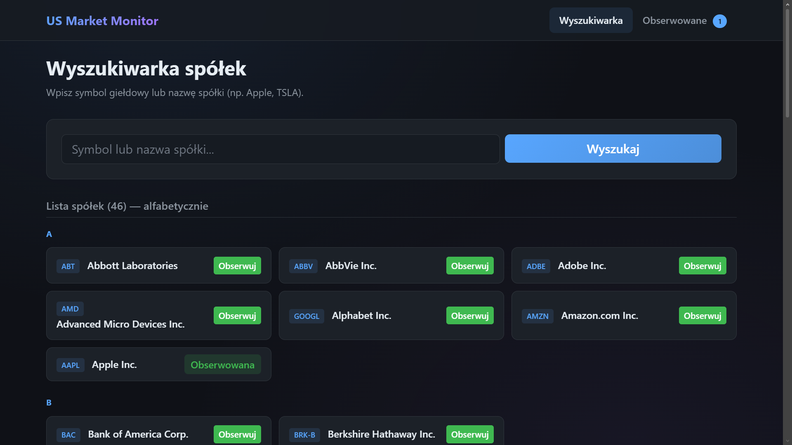
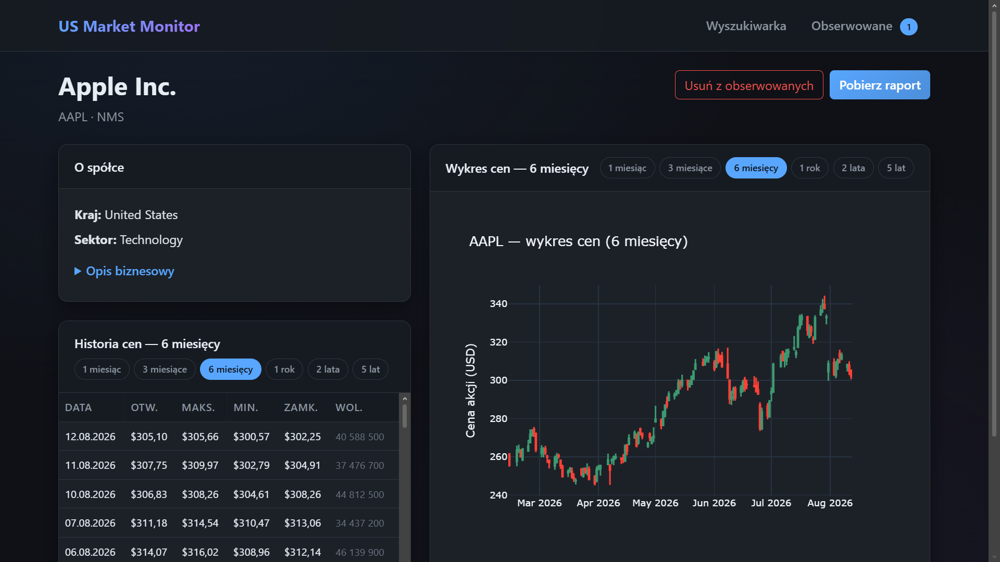

Django · Python · yfinance
US Market Monitor — aplikacja do monitorowania spółek giełdowych
Cel projektu
US Market Monitor to aplikacja webowa stworzona w Django, która upraszcza codzienne śledzenie amerykańskich spółek giełdowych. Zamiast ręcznego przeszukiwania wielu źródeł użytkownik ma jedno miejsce do wyszukiwania firm po symbolu lub nazwie, przeglądania katalogu popularnych spółek US oraz budowania własnej listy obserwowanych. Każda firma ma dedykowaną stronę z danymi podstawowymi, sześciomiesięcznym wykresem świecowym i możliwością pobrania gotowego raportu Word — narzędzie łączy wygodę przeglądarki z automatyzacją raportowania analitycznego.
Architektura
Projekt opiera się na klasycznej strukturze Django z wydzieloną aplikacją
companies. Logika biznesowa jest rozdzielona na warstwy:
widoki obsługują routing i renderowanie szablonów, modele przechowują
listę obserwowanych spółek (WatchedCompany), a dedykowane
serwisy — yfinance_service i report_service —
odpowiadają za pobieranie danych rynkowych oraz generowanie dokumentów.
Katalog spółek US jest utrzymywany w module companies_catalog.py,
co pozwala na szybkie wyszukiwanie bez zbędnych zapytań do zewnętrznego API.
Context processor dostarcza licznik obserwowanych firm do nawigacji
na każdej podstronie.
Integracja danych
Źródłem danych rynkowych jest biblioteka yfinance i API Yahoo Finance.
Serwis yfinance_service pobiera profile spółek, notowania
historyczne i metryki finansowe w czasie rzeczywistym. Na stronie szczegółów
firmy prezentowany jest wykres świecowy obejmujący ostatnie sześć miesięcy —
użytkownik widzi trend cenowy bez konieczności przechodzenia do zewnętrznych
platform. Warstwa serwisowa izoluje widoki od szczegółów integracji,
dzięki czemu ewentualna wymiana dostawcy danych wymaga zmian tylko
w jednym miejscu kodu.
Obserwowane spółki
Funkcja watchlisty pozwala dodawać i usuwać spółki z listy obserwowanych jednym kliknięciem. Stan jest trwale zapisywany w bazie SQLite przez model Django, a liczba obserwowanych firm jest widoczna w pasku nawigacji dzięki dedykowanemu context processorowi. Wspólna lista obserwowanych ułatwia szybki powrót do interesujących tickerów bez ponownego wyszukiwania — rozwiązanie typowe dla narzędzi analitycznych, zaimplementowane w lekkim, samodzielnym środowisku developerskim.
Raportowanie
Kluczową funkcją aplikacji jest generowanie raportów Word (.docx).
Serwis report_service składa dokument z opisem spółki,
danymi podstawowymi (sektor, kapitalizacja, P/E i inne wskaźniki)
oraz osadzonym wykresem cen. Użytkownik pobiera gotowy plik bezpośrednio
ze strony firmy — raport można od razu przekazać dalej lub wykorzystać
w prezentacji. Cały proces od wyboru spółki do pliku Word odbywa się
w przeglądarce, bez ręcznego kopiowania danych między aplikacjami.


Repozytorium
Zobacz kod projektu
Pełne źródła, instrukcja uruchomienia i struktura projektu są dostępne na GitHubie.